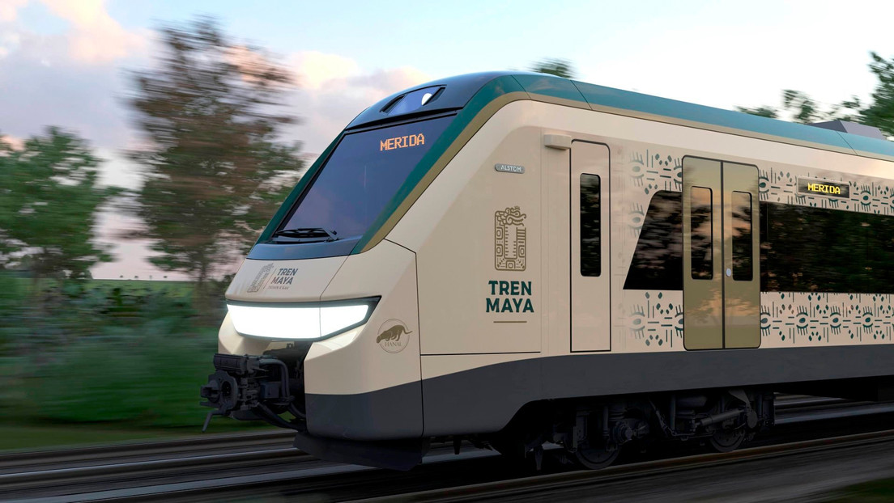
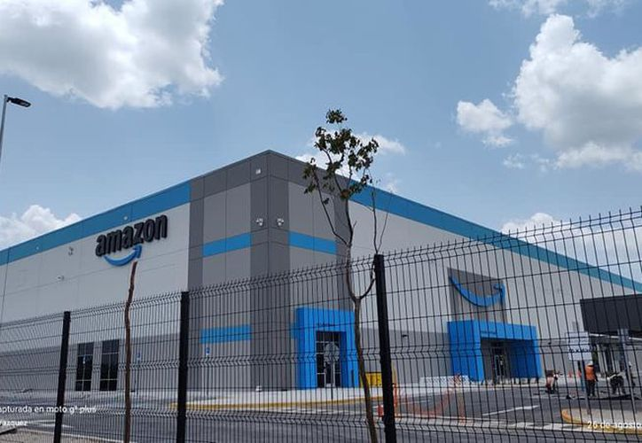

Proyectos importantes en Yucatán
|  |
Tren MayaIniciativa gubernamental que busca mejorar la conectividad y el desarrollo económico de la región de Yucatán. La obra consiste en la construcción de una vía férrea de más de 1,400 kilómetros que conectará diferentes zonas turísticas, arqueológicas y culturales de la región.Además,tiene el potencial de impulsar el desarrollo de nuevas actividades económicas en la región, como el ecoturismo y la agricultura sustentable, gracias a la mejora en la conectividad y la circulación de bienes y personas. Se espera que el Tren Maya sea un catalizador importante para el crecimiento económico y la prosperidad en la región de Yucatán |
|  |
Centro de Distribución AmazonLa presencia de esta empresa ha generado empleos y ha impulsado el crecimiento del sector logístico y de servicios en la zonaHa contribuido a mejorar la infraestructura de la región, ya que la empresa ha invertido en la construcción de nuevas carreteras y en la modernización de los servicios de transporte. Esto ha permitido mejorar la conectividad de la región y ha fomentado el desarrollo de nuevas actividades económicas.El centro de distribución de Amazon es un importante motor de crecimiento económico en el estado de Yucatán, al generar empleos y contribuir al desarrollo del sector logístico y de servicios en la región. |